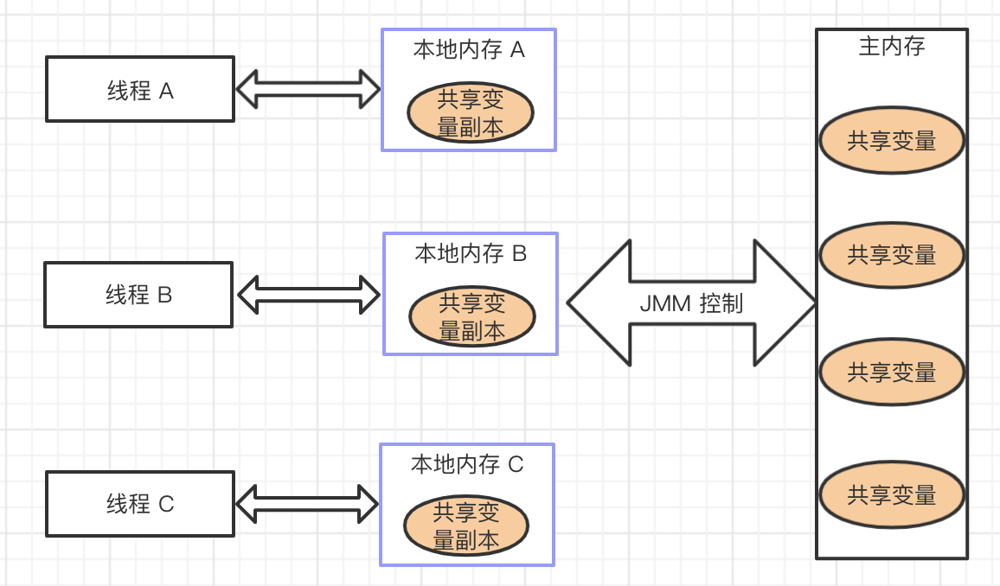
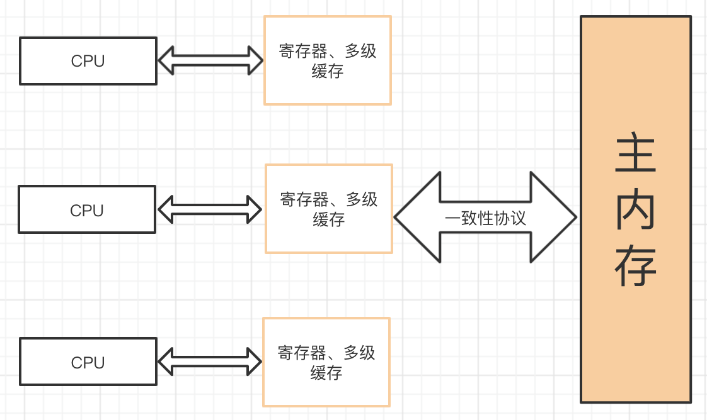
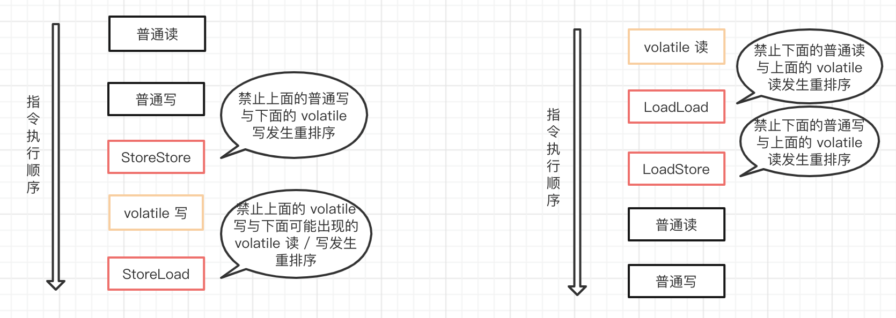

最近，在一篇文章中了解到了 volatile 关键字，在强烈的求知欲趋使下，我查阅了一些相关资料进行了学习，并将学习笔记记录如下，希望能给小伙伴们带来一些帮助。如果文章内容存在一些错误，也请小伙伴们指正，感谢。
这里先给大家分享一个我在 B 站发现的讲解 volitle 关键字的视频，有兴趣的同学可以认真看一下，挺不错的，我就是通过它进行的学习。
视频地址：https://www.bilibili.com/video/BV1BJ411j7qb?from=search&seid=7212869160158812321。
volatile 的作用
大家都应该知道 volatile 的主要作用有两点：
- 保证变量的内存可见性
- 禁止指令重排序
那么，什么是内存可见性，什么是指令重排序，以及它们涉及了那些机制呢？下面就让我们来看看吧。
在这里提醒一下，各位小伙伴要有个心理准备，就一个 volatile 关键字所涉及的知识点超乎你的想象哟。
可见性问题
在理解 volatile 的内存可见性前，我们先来看看这个比较常见的多线程访问共享变量的例子。
1 | /** |
2 | * 变量的内存可见性例子 |
3 | * |
4 | * @author star |
5 | */ |
6 | public class VolatileExample { |
7 | |
8 | /** |
9 | * main 方法作为一个主线程 |
10 | */ |
11 | public static void main(String[] args) { |
12 | MyThread myThread = new MyThread(); |
13 | // 开启线程 |
14 | myThread.start(); |
15 | |
16 | // 主线程执行 |
17 | for (; ; ) { |
18 | if (myThread.isFlag()) { |
19 | System.out.println("主线程访问到 flag 变量"); |
20 | } |
21 | } |
22 | } |
23 | |
24 | } |
25 | |
26 | /** |
27 | * 子线程类 |
28 | */ |
29 | class MyThread extends Thread { |
30 | |
31 | private boolean flag = false; |
32 | |
33 | |
34 | public void run() { |
35 | try { |
36 | Thread.sleep(1000); |
37 | } catch (InterruptedException e) { |
38 | e.printStackTrace(); |
39 | } |
40 | // 修改变量值 |
41 | flag = true; |
42 | System.out.println("flag = " + flag); |
43 | } |
44 | |
45 | public boolean isFlag() { |
46 | return flag; |
47 | } |
48 | |
49 | public void setFlag(boolean flag) { |
50 | this.flag = flag; |
51 | } |
52 | } |
执行上面的程序，你会发现，控制台永远都不会输出 “主线程访问到 flag 变量” 这句话。我们可以看到，子线程执行时已经将 flag 设置成 true，但主线程执行时没有读到 flag 的最新值，导致控制台没有输出上面的句子。
那么，我们思考一下为什么会出现这种情况呢？这里我们就要了解一下 Java 内存模型（简称 JMM）。
Java 内存模型
JMM（Java Memory Model）：Java 内存模型，是 Java 虚拟机规范中所定义的一种内存模型，Java 内存模型是标准化的，屏蔽掉了底层不同计算机的区别。也就是说，JMM 是 JVM 中定义的一种并发编程的底层模型机制。
JMM 定义了线程和主内存之间的抽象关系：线程之间的共享变量存储在主内存中，每个线程都有一个私有的本地内存，本地内存中存储了该线程以读/写共享变量的副本。
JMM 的规定：
所有的共享变量都存储于主内存。这里所说的变量指的是实例变量和类变量，不包含局部变量，因为局部变量是线程私有的，因此不存在竞争问题。
每一个线程还存在自己的工作内存，线程的工作内存，保留了被线程使用的变量的工作副本。
线程对变量的所有的操作（读，取）都必须在工作内存中完成，而不能直接读写主内存中的变量。
不同线程之间也不能直接访问对方工作内存中的变量，线程间变量的值的传递需要通过主内存中转来完成。
JMM 的抽象示意图：

然而，JMM 这样的规定可能会导致线程对共享变量的修改没有即时更新到主内存，或者线程没能够即时将共享变量的最新值同步到工作内存中，从而使得线程在使用共享变量的值时，该值并不是最新的。
正因为 JMM 这样的机制，就出现了可见性问题。也就是我们上面那个例子出现的问题。
那我们要如何解决可见性问题呢？接下来我们就聊聊内存可见性以及可见性问题的解决方案。
内存可见性
内存可见性是指当一个线程修改了某个变量的值，其它线程总是能知道这个变量变化。也就是说，如果线程 A 修改了共享变量 V 的值，那么线程 B 在使用 V 的值时，能立即读到 V 的最新值。
可见性问题的解决方案
我们如何保证多线程下共享变量的可见性呢？也就是当一个线程修改了某个值后，对其他线程是可见的。
这里有两种方案：加锁 和 使用 volatile 关键字。
下面我们使用这两个方案对上面的例子进行改造。
加锁
使用 synchronizer 进行加锁。
1 | /** |
2 | * main 方法作为一个主线程 |
3 | */ |
4 | public static void main(String[] args) { |
5 | MyThread myThread = new MyThread(); |
6 | // 开启线程 |
7 | myThread.start(); |
8 | |
9 | // 主线程执行 |
10 | for (; ; ) { |
11 | synchronized (myThread) { |
12 | if (myThread.isFlag()) { |
13 | System.out.println("主线程访问到 flag 变量"); |
14 | } |
15 | } |
16 | } |
17 | } |
这里大家应该有个疑问是，为什么加锁后就保证了变量的内存可见性了？ 因为当一个线程进入 synchronizer 代码块后，线程获取到锁，会清空本地内存，然后从主内存中拷贝共享变量的最新值到本地内存作为副本，执行代码，又将修改后的副本值刷新到主内存中，最后线程释放锁。
这里除了 synchronizer 外，其它锁也能保证变量的内存可见性。
使用 volatile 关键字
使用 volatile 关键字修饰共享变量。
1 | /** |
2 | * 子线程类 |
3 | */ |
4 | class MyThread extends Thread { |
5 | |
6 | private volatile boolean flag = false; |
7 | |
8 | |
9 | public void run() { |
10 | try { |
11 | Thread.sleep(1000); |
12 | } catch (InterruptedException e) { |
13 | e.printStackTrace(); |
14 | } |
15 | // 修改变量值 |
16 | flag = true; |
17 | System.out.println("flag = " + flag); |
18 | } |
19 | |
20 | public boolean isFlag() { |
21 | return flag; |
22 | } |
23 | |
24 | public void setFlag(boolean flag) { |
25 | this.flag = flag; |
26 | } |
27 | } |
使用 volatile 修饰共享变量后，每个线程要操作变量时会从主内存中将变量拷贝到本地内存作为副本，当线程操作变量副本并写回主内存后，会通过 CPU 总线嗅探机制告知其他线程该变量副本已经失效，需要重新从主内存中读取。
volatile 保证了不同线程对共享变量操作的可见性，也就是说一个线程修改了 volatile 修饰的变量，当修改后的变量写回主内存时，其他线程能立即看到最新值。
接下来我们就聊聊一个比较底层的知识点：总线嗅探机制。
总线嗅探机制
在现代计算机中，CPU 的速度是极高的，如果 CPU 需要存取数据时都直接与内存打交道，在存取过程中，CPU 将一直空闲，这是一种极大的浪费，所以，为了提高处理速度，CPU 不直接和内存进行通信，而是在 CPU 与内存之间加入很多寄存器，多级缓存，它们比内存的存取速度高得多，这样就解决了 CPU 运算速度和内存读取速度不一致问题。
由于 CPU 与内存之间加入了缓存，在进行数据操作时，先将数据从内存拷贝到缓存中，CPU 直接操作的是缓存中的数据。但在多处理器下，将可能导致各自的缓存数据不一致（这也是可见性问题的由来），为了保证各个处理器的缓存是一致的，就会实现缓存一致性协议，而嗅探是实现缓存一致性的常见机制。

注意，缓存的一致性问题，不是多处理器导致，而是多缓存导致的。
嗅探机制工作原理：每个处理器通过监听在总线上传播的数据来检查自己的缓存值是不是过期了，如果处理器发现自己缓存行对应的内存地址修改，就会将当前处理器的缓存行设置无效状态，当处理器对这个数据进行修改操作的时候，会重新从主内存中把数据读到处理器缓存中。
注意：基于 CPU 缓存一致性协议，JVM 实现了 volatile 的可见性，但由于总线嗅探机制，会不断的监听总线，如果大量使用 volatile 会引起总线风暴。所以，volatile 的使用要适合具体场景。
可见性问题小结
上面的例子中，我们看到，使用 volatile 和 synchronized 锁都可以保证共享变量的可见性。相比 synchronized 而言，volatile 可以看作是一个轻量级锁，所以使用 volatile 的成本更低，因为它不会引起线程上下文的切换和调度。但 volatile 无法像 synchronized 一样保证操作的原子性。
下面我们来聊聊 volatile 的原子性问题。
volatile 的原子性问题
所谓的原子性是指在一次操作或者多次操作中，要么所有的操作全部都得到了执行并且不会受到任何因素的干扰而中断，要么所有的操作都不执行。
在多线程环境下，volatile 关键字可以保证共享数据的可见性，但是并不能保证对数据操作的原子性。也就是说，多线程环境下，使用 volatile 修饰的变量是线程不安全的。
要解决这个问题，我们可以使用锁机制，或者使用原子类（如 AtomicInteger）。
这里特别说一下，对任意单个使用 volatile 修饰的变量的读 / 写是具有原子性，但类似于 flag = !flag 这种复合操作不具有原子性。简单地说就是，单纯的赋值操作是原子性的。
禁止指令重排序
什么是重排序？
为了提高性能，在遵守 as-if-serial 语义（即不管怎么重排序，单线程下程序的执行结果不能被改变。编译器，runtime 和处理器都必须遵守。）的情况下，编译器和处理器常常会对指令做重排序。
一般重排序可以分为如下三种类型：
编译器优化重排序。编译器在不改变单线程程序语义的前提下，可以重新安排语句的执行顺序。
指令级并行重排序。现代处理器采用了指令级并行技术来将多条指令重叠执行。如果不存在数据依赖性，处理器可以改变语句对应机器指令的执行顺序。
内存系统重排序。由于处理器使用缓存和读 / 写缓冲区，这使得加载和存储操作看上去可能是在乱序执行。
数据依赖性：如果两个操作访问同一个变量，且这两个操作中有一个为写操作，此时这两个操作之间就存在数据依赖性。这里所说的数据依赖性仅针对单个处理器中执行的指令序列和单个线程中执行的操作，不同处理器之间和不同线程之间的数据依赖性不被编译器和处理器考虑。
从 Java 源代码到最终执行的指令序列，会分别经历下面三种重排序：
为了更好地理解重排序，请看下面的部分示例代码：
1 | int a = 0; |
2 | // 线程 A |
3 | a = 1; // 1 |
4 | flag = true; // 2 |
5 | |
6 | // 线程 B |
7 | if (flag) { // 3 |
8 | int i = a; // 4 |
9 | } |
单看上面的程序好像没有问题，最后 i 的值是 1。但是为了提高性能，编译器和处理器常常会在不改变数据依赖的情况下对指令做重排序。假设线程 A 在执行时被重排序成先执行代码 2，再执行代码 1；而线程 B 在线程 A 执行完代码 2 后，读取了 flag 变量。由于条件判断为真，线程 B 将读取变量 a。此时，变量 a 还根本没有被线程 A 写入，那么 i 最后的值是 0，导致执行结果不正确。那么如何程序执行结果正确呢？这里仍然可以使用 volatile 关键字。
这个例子中， 使用 volatile 不仅保证了变量的内存可见性，还禁止了指令的重排序，即保证了 volatile 修饰的变量编译后的顺序与程序的执行顺序一样。那么使用 volatile 修饰 flag 变量后，在线程 A 中，保证了代码 1 的执行顺序一定在代码 2 之前。
那么，让我们继续往下探索， volatile 是如何禁止指令重排序的呢？这里我们将引出一个概念：内存屏障指令
内存屏障指令
为了实现 volatile 内存语义（即内存可见性），JMM 会限制特定类型的编译器和处理器重排序。为此，JMM 针对编译器制定了 volatile 重排序规则表，如下所示：

使用 volatile 修饰变量时，根据 volatile 重排序规则表，Java 编译器在生成字节码时，会在指令序列中插入内存屏障指令来禁止特定类型的处理器重排序。
内存屏障是一组处理器指令，它的作用是禁止指令重排序和解决内存可见性的问题。
JMM 把内存屏障指令分为下列四类：
| 屏障类型 | 指令示例 | 说明 |
|---|---|---|
| LoadLoad 屏障 | Load1; LoadLoad; Load2 | 确保 Load1 数据的读取操作，在 Load2 及所有后续的读取操作之前。 |
| StoreStore 屏障 | Store1; StoreStore; Store2 | 确保 Store1 数据的写入操作对其他处理器可见（刷新到内存），在 Store2 及所有后续数据的写入操作之前。 |
| LoadStore 屏障 | Load1; LoadStore; Store2 | 确保 Load1 数据的读取操作，在 Store2 及所有后续的数据刷新到内存之前。 |
| StoreLoad 屏障 | Store1; StoreLoad; Load2 | 确保 Store1 数据的写入操作对其他处理器变得可见（指刷新到内存），在 Load2 及所有后续数据的写入操作之前。StoreLoad 屏障会使该屏障之前的所有内存访问指令（读取和写入指令）完成之后，才执行该屏障之后的内存访问指令。 |
StoreLoad 屏障是一个全能型的屏障，它同时具有其他三个屏障的效果。所以执行该屏障开销会很大，因为它使处理器要把缓存中的数据全部刷新到内存中。
下面我们来看看 volatile 读 / 写时是如何插入内存屏障的，见下图：

从上图，我们可以知道 volatile 读 / 写插入内存屏障规则：
- 在每个 volatile 读操作的后面插入 LoadLoad 屏障和 LoadStore 屏障。
- 在每个 volatile 写操作的前后分别插入一个 StoreStore 屏障和一个 StoreLoad 屏障。
也就是说，编译器不会对 volatile 读与 volatile 读后面的任意内存操作重排序；编译器不会对 volatile 写与 volatile 写前面的任意内存操作重排序。
happens-before 概述
上面我们讲述了重排序原则，为了提高处理速度， JVM 会对代码进行编译优化，也就是指令重排序优化，但是并发编程下指令重排序也会带来一些安全隐患：如指令重排序导致的多个线程操作之间的不可见性。为了理解 JMM 提供的内存可见性保证，让程序员再去学习复杂的重排序规则以及这些规则的具体实现，那么程序员的负担就太重了，严重影响了并发编程的效率。
所以从 JDK5 开始，提出了 happens-before 的概念，通过这个概念来阐述操作之间的内存可见性。如果一个操作执行的结果需要对另一个操作可见，那么这两个操作之间必须存在 happens-before 关系。这里提到的两个操作既可以是在一个线程之内，也可以是在不同线程之间。
happens-before 规则如下：
程序顺序规则：一个线程中的每个操作，happens-before 于该线程中的任意后续操作。
监视器锁规则：对一个监视器锁的解锁，happens-before 于随后对这个监视器锁的加锁。
volatile 变量规则：对一个 volatile 域的写，happens-before 于任意后续对这个 volatile 域的读。
传递性：如果 A happens-before B，且 B happens-before C，那么 A happens-before C。
start() 规则：Thread.start() 的调用会 happens-before 于启动线程里面的动作。
join() 规则：Thread 中的所有动作都 happens-before 于其他线程从 Thread.join() 中成功返回。
这里特别说明一下，happens-before 规则不是描述实际操作的先后顺序，它是用来描述可见性的一种规则。
从 happens-before 的 volatile 变量规则可知，如果线程 A 写入了 volatile 修饰的变量 V，接着线程 B 读取了变量 V，那么，线程 A 写入变量 V 及之前的写操作都对线程 B 可见。
volatile 在单例模式中的应用
单例模式有 8 种，而懒汉式单例双重检测模式中就使用到了 volatile 关键字。
代码如下：
1 | public class Singleton { |
2 | // volatile 保证可见性和禁止指令重排序 |
3 | private static volatile Singleton singleton; |
4 | |
5 | public static Singleton getInstance() { |
6 | // 第一次检查 |
7 | if (singleton == null) { |
8 | // 同步代码块 |
9 | synchronized(this.getClass()) { |
10 | // 第二次检查 |
11 | if (singleton == null) { |
12 | // 对象的实例化是一个非原子性操作 |
13 | singleton = new Singleton(); |
14 | } |
15 | } |
16 | } |
17 | return singleton; |
18 | } |
19 | } |
上面代码中， new Singleton() 是一个非原子性操作，对象实例化分为三步操作：（1）分配内存空间，（2）初始化实例，（3）返回内存地址给引用。所以，在使用构造器创建对象时，编译器可能会进行指令重排序。假设线程 A 在执行创建对象时，（2）和（3）进行了重排序，如果线程 B 在线程 A 执行（3）时拿到了引用地址，并在第一个检查中判断 singleton != null 了，但此时线程 B 拿到的不是一个完整的对象，在使用对象进行操作时就会出现问题。
所以，这里使用 volatile 修饰 singleton 变量，就是为了禁止在实例化对象时进行指令重排序。
总结
volatile 修饰符适用于以下场景：某个属性被多个线程共享，其中有一个线程修改了此属性，其他线程可以立即得到修改后的值；或者作为状态变量，如 flag = ture，实现轻量级同步。
volatile 属性的读写操作都是无锁的，它不能替代 synchronized，因为它没有提供原子性和互斥性。因为无锁，不需要花费时间在获取锁和释放锁上，所以说它是低成本的。
volatile 只能作用于属性，我们用 volatile 修饰属性，这样编译器就不会对这个属性做指令重排序。
volatile 提供了可见性，任何一个线程对其的修改将立马对其他线程可见。volatile 属性不会被线程缓存，始终从主存中读取。
volatile 提供了 happens-before 保证，对 volatile 变量 V 的写入 happens-before 所有其他线程后续对 V 的读操作。
volatile 可以使纯赋值操作是原子的，如
boolean flag = true; falg = false。volatile 可以在单例双重检查中实现可见性和禁止指令重排序，从而保证安全性。
参考
happen-before 俗解：http://ifeve.com/easy-happens-before/
JMM Cookbook(一)指令重排：http://ifeve.com/jmm-cookbook-reorderings/
JMM Cookbook(二)内存屏障：http://ifeve.com/jmm-cookbook-mb/
深入理解 Java 内存模型（二）——重排序：https://www.infoq.cn/article/java-memory-model-2/
深入理解 Java 内存模型（四）——volatile：https://www.infoq.cn/article/java-memory-model-4
窥探真相：volatile 可见性实现原理：https://segmentfault.com/a/1190000020909627
因为是个人学习笔记，难免存在一些错误或纰漏，也请小伙伴们指正。